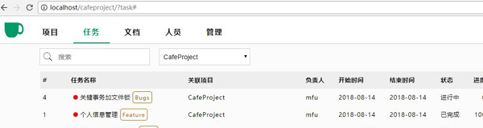
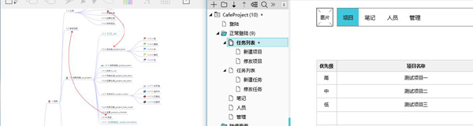
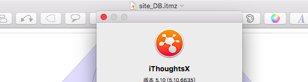

开发的第11天，最重要的项目和任务模块完成了，其中对个人设置那里大改了一次。现在的功能和界面设计，反正我是觉得可以拿出来见人了。目标是让绝大多数人看着都觉得“还行”，就很不容易了。放两张截图：
我做过一个项目管理工具来管理自己的业余项目和生活琐事。然而用了一年多，觉得它有点像一家公司的后台，虽然功能不多但我也觉得有点繁杂了。于是想重新做一个。那么业余项目的制作过程是怎样的呢？Day1：规划！
无论是在工作还是在生活中，思维导图都是梳理杂乱思绪的必备工具。你们一定对都对MindNode和XMind特别了解啦，所以今天我想聊的是另一款MAC上的顶级思维导图软件——IThoughtsX。
Next
Prev
©Faluo 2018